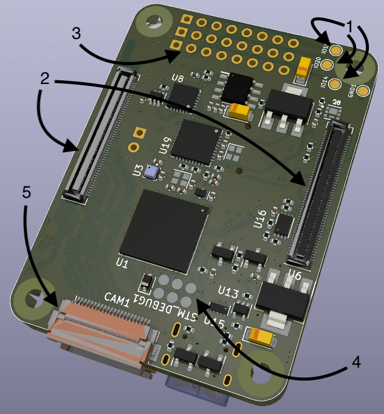
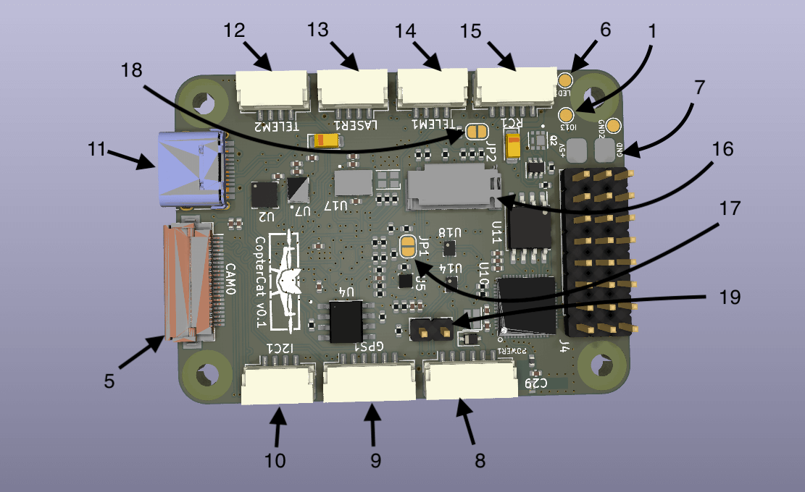

CopterCat_cm4
CopterHack-2022, команда CopterCat.

Team Information
Line-up:
- Lapin Matvey (https://t.me/l_motya), engineer/programmer.
- Konovalov Evgeny (https://t.me/egnknvlv), engineer/friend.
- Skandakov Egor (https://t.me/hjbaa), friend.
- Jalilov Emil, friend.
Project Description
Development of a modern board for PX4 FMUv6U firmware, 55x40 mm sizes and an additional WiFi module to implement cool things, for example, a distributed network.
Project idea
Flight controller on stm32h7 with space for RPi CM4 and built-in ESP32 to create a distributed network.
Planned results
FMUv6U flight controller board and API for interacting with a distributed network via RPi.
Using the "Clover" platform
At the stage of the project: debugging and demonstration of capabilities. After: using CopterCat as the main one.
Specification
FMU
- STM32H753IIK6 480Mhz Cortex-M7
- 2Mb + 256Kb FLASH
- 1Mb RAM
- ICM20602, ICM42605, BMI088, BMP388, BMM150
- Fully compliant with FMU-v6u standard
Raspberry Pi
- Support for RPi CM4 board.
- SD card slot.
- Ability to flash the built-in eMMC.
- CAT24C256 EEPROM.
- Support 2 cameras (CAM0 is two lines, CAM1 is four lines).
- USB-OTG support.
ESP32
- 16MB external FLASH (W25Q128JVS).
- 8MB external PSRAM (LY68L6400SLIT).
- Built-in antenna.
- USB-TTL converter.
Remaining
- USB-HUB USB2514B.
- USB-PD with physical switching.
- Communication between ESP32 and STM32 via UART.
- 3 power options.
- 4 universal GPIOs from ESP32.
- USB Type-C.
- Dimensions 40x55mm, board 4 layers.
Connectors and jumpers
 
- GPIO ESP32 4 I/O ports for connecting external equipment.
- RPi CM4 connectors.
- ESC pins 8 pcs.
- Programming and debugging pins for JTAG STM32.
- Camera connectors (22 pin cable with 0.5 mm distance between conductors).
- Contact for connecting the address tape.
- Main power contacts 5V.
- JST-6 standard PX4 power cable.
- JST-6 GPS+compass+5V.
- JST-4 I2C+5В.
- USB Type-C.
- JST-4 UART7+5В.
- JST-4 I2C RPi+3.3B for connecting a rangefinder.
- JST-4 UART5+5V.
- JST-5 Standard connector for connecting the control receiver.
- SD card slot (for RPi).
- Jumper BOOT for STM32.
- RPIBOOT jumper for flashing the RPi CM4 eMMC module.
- Jumper for switching the USB connector operation mode (when the jumper is closed, USB works as a HUB input and when connected to a computer, STM32, ESP32 and RPi CM4 in OTG mode will be displayed; when the jumper is open, USB will work to connect external devices to the RPi, for example stereo cameras).
Firmware download
FMU
When you first start, the microcontroller will have to load the PX4-bootloader through the JTAG port. detailed instructions here.
To connect to a computer:
- Close jumper 19.
- Connect USB Type-C to your computer.
- The device should appear in QGC.
You can also flash firmware via RPi:
- Install the RPi CM4 into the connector on the board.
- Open jumper 19.
- The device will appear in the
/devfolder on the RPi.
ESP32
You can write a program either in Arduino IDE or in VS Code with the plugin esp-idf. Then compile and upload to the microcontroller. You can download in two ways.
From computer:
- Close jumper 19
- CP2104 will appear in the connected devices
- Download the firmware according to the instructions for the selected IDE
With RPi CM4:
- Install the RPi CM4 into the connector on the board.
- Open jumper 19.
- Compile your code to .bin format.
- Upload the resulting file to the RPi.
- Download the firmware to the microcontroller using esptool.py description+installation.
RPi CM4
The SD card slot works like a standard RPi. For boards with eMMC, the boot order of the operating system does not differ from the CM4 IO Board instruction.